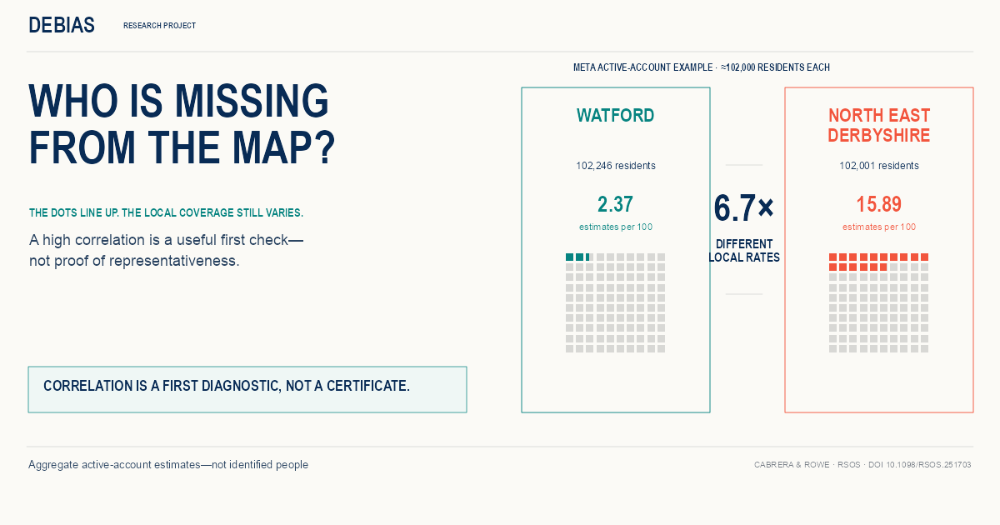
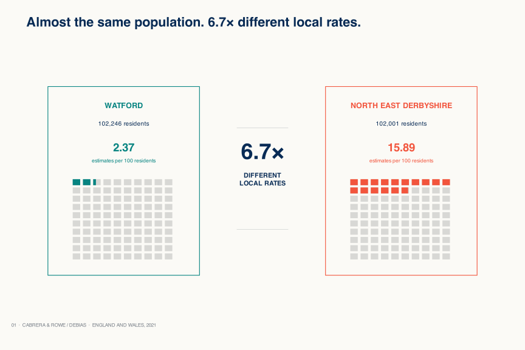
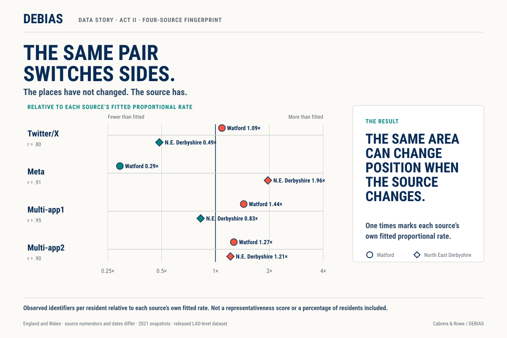
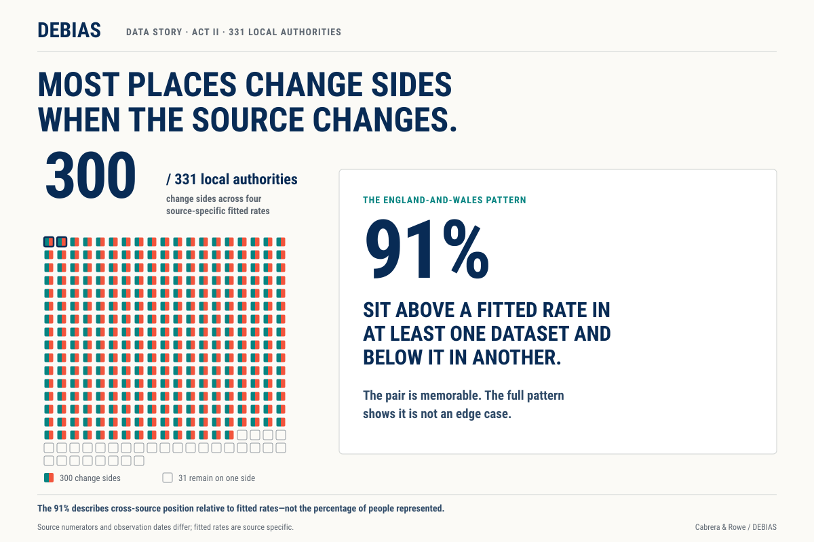
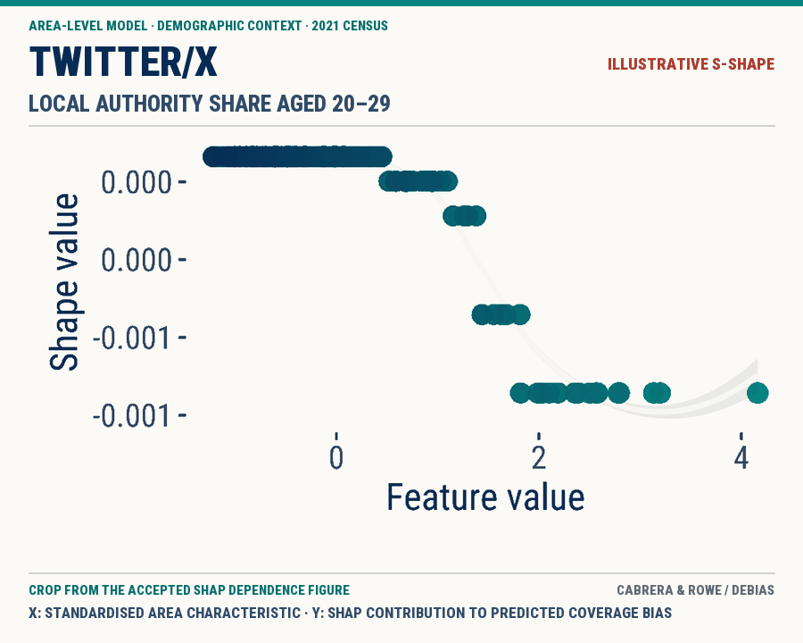
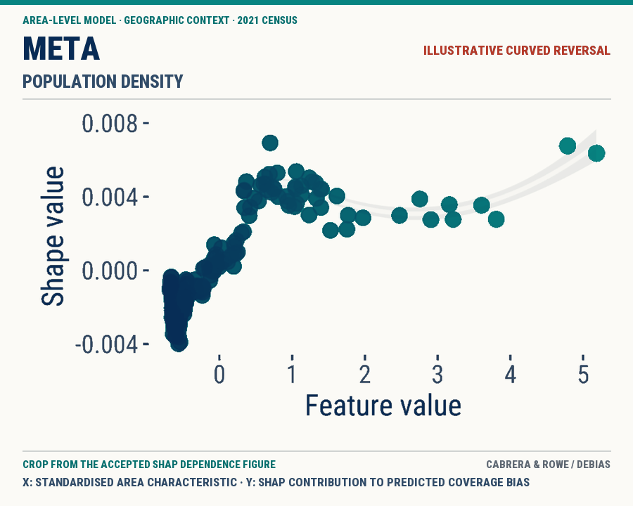
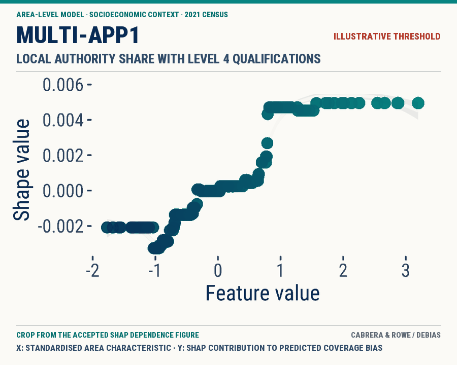

Media assets
Two acts.
One clear warning.
Downloadable graphics from the interactive story for Making hidden biases visible in population location data from mobile phones. Credit: Cabrera & Rowe / DEBIAS.
Lead and Act I
Correlation can hide uneven local coverage.




Act II · Cross-source proof
The source changes the local picture.
The fitted-rate fingerprint shows the same pair switching sides; the 300-of-331 graphic shows that the pattern is widespread across England and Wales. Values are relative to separate source-specific fitted rates, not percentages of residents represented.


Act II · Crops from the accepted model figure
Different area contexts. Different nonlinear shapes.
These are illustrative, feature-level examples—not source-wide signatures. Each point is a local authority. The x-axis is a standardised area characteristic and the y-axis is its SHAP contribution to predicted coverage bias. The panels do not show the age, qualifications or inclusion probability of individual users. Compare shapes, not magnitudes.


